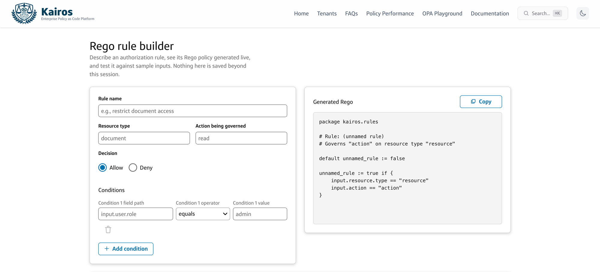
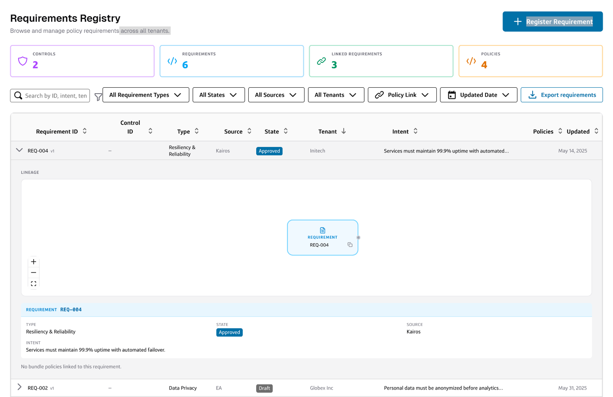
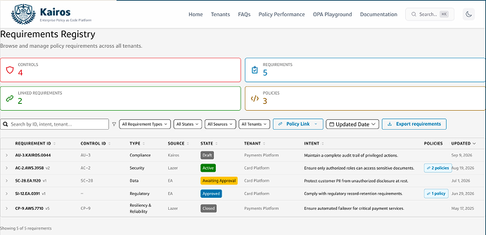
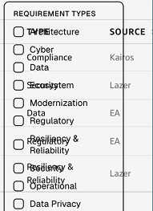
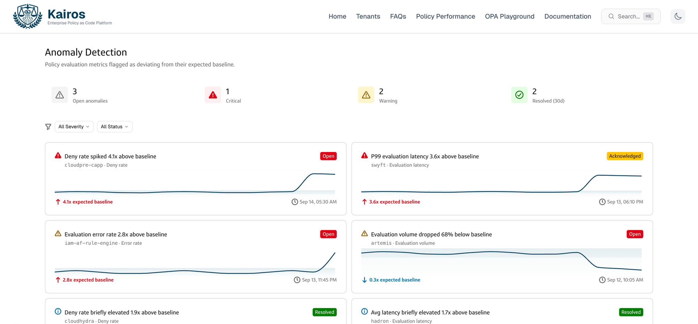

Overview
Kairos is Capital One's enterprise policy-as-code platform: tenants author and deploy Rego policies, governance owners approve requirement changes, and downstream systems consume enforcement decisions. The team builds it with heavy use of Claude Code, which has accelerated development past the point where design can keep pace and review every screen.
Rather than wait for Capital One's Gravity design system to ship a machine-readable, agentic layer, I wrote DESIGN.md and a set of supporting design docs, drafting them with Claude. The docs encode design standards and principles as rules a coding agent follows while generating UI then checks its output against.
Problem
No single design system was enforced across the Kairos platform, and it showed: corner radii, hover states, fonts, and even button and tag styles varied page to page. By handing every UI decision to the agent, the dev team relied on its judgment to figure out which components to use and when, the kind of design reasoning current models still lack.
Kairos could draw on two Capital One design systems: Gravity, the enterprise standard, whose web components have been slow to develop, and Omni, an older and somewhat outdated system created as a stopgap for Gravity web. Nothing pointed the agent toward either, and an audit of the Kairos repo showed the result:
Each of those 36 hallucinated components was the agent independently inventing a UI primitive that Gravity or Omni already shipped because nothing told it otherwise. 28 were built on headless libraries like Radix, shadcn, and Recharts; 8 were built from scratch. Every one is visual debt, plus compute and context spent generating something redundant that later has to be found and fixed.
The reframe
I cannot quickly train developers to practice proper judgment with UI design, and a manual migration of the whole app onto a design system is a difficult sell considering other high-priority enhancements. Moreover, until models improve at reasoning with components, a back-and-forth between designer and agent, or between developer and agent with a designer in the loop, is still required. However, handing agents these documents raises the baseline for usability, visual design, and design standard adherence.
Process
A design markdown is a plain markdown file that gives AI coding agents structured design tokens and visual rules: a YAML front-matter block of machine-readable tokens (color, typography, shape, spacing, components), paired with a prose body that expands each one with rationale an agent can act on.
The better long-term answer is a mature agentic design system that serves this context on demand. Gravity is expected to ship one, but it isn't ready yet. A markdown file is readable by people, parseable by machines, easy to version and diff in a pull request, and drops into a repo with no new tooling. That made it worth building as a stopgap rather than waiting.
It was meant to do three things: generate new UI in Gravity and Omni styling, audit existing UI for drift, and migrate existing UI onto the system. It took three versions to get the first one working.
A developer installed Gravity tokens and Omni components and gave the agent a preference order: use them first, and fall back to Tailwind or local components only if neither covered the case. It generated the correct components and component-level styling (color, corner radius, border width), but spacing and text alignment were haphazard, producing a disjointed interface.
I took over the document, adding spacing and typography tokens and bringing in Gravity's foundations — its standards for page layout, spacing, typography, color, and data visualization. DESIGN.md became an orchestrating file that routes agents to docs/design-system/, with one file per foundation — colors, spacing, typography, elevation, corner radius, border, iconography, illustrations, and data visualization — each holding tokens, do's and don'ts, and notes specific to this repo. An agent jumps straight to the rule it needs instead of parsing one long file.
A Rego rule builder generated with v2, with form fields, a live code preview, and condition rows, reads clean and on-brand.

New UI generated with v2 of the design markdown. Note the delete icon sitting below its condition row instead of aligned with it.
Migration was the harder half. Asked to bring the existing Requirements Registry onto Gravity, the agent produced haphazard margins and layout, rendered contextual menus and modals with transparent backgrounds instead of solid fills, and mishandled hidden interactions like drawers and expandable rows, because nothing in the document told it how those patterns should work.
Before:
After:

Migrated Requirements Registry whose expanded rows have not been updated with proper styling.

Content runs flush to the left edge with no page margins.

Filter menus render with transparent backgrounds.
I added a templates doc covering general page layout (headings, subheaders, and margins) and tables, plus a component usage doc that gives context for every component. The docs are also improved with each invocation: agents are instructed to log gaps in a table, whether a component is missing from Gravity or an existing component lacks functionality, and to push what they learn from back-and-forth with developers into the templates and component usage docs. Developers are testing this version now.
DESIGN.md# orchestrator: routes agents to the right doc docs/ └── design-system/ ├── border.md# foundation ├── colors.md# foundation ├── component-usage-notes.md# components & layout ├── corner-radius.md# foundation ├── data-visualization.md# foundation ├── elevation.md# foundation ├── iconography.md# foundation ├── illustrations.md# foundation ├── spacing.md# foundation ├── templates.md# components & layout ├── typography.md# foundation └── web-components.md# components & layout
How the docs are organized: DESIGN.md at the root routes agents to foundation, component, and layout docs.
An Anomaly Detection page generated with v3 goes further, with summary counts, filters, and a grid of anomalies with trend lines. Gaps remain: the agent defaults to cards for content groups and deviates from rules at times, leading to mistakes such as misaligned content or hyperlinked text without the proper color token.

A net-new Anomaly Detection page generated with v3. The components and styling are on-brand, but the agent still defaulted to cards for every anomaly where a table might scan better.
With v3 and several rounds of back-and-forth between me and the agent, the migration got much closer: consistent page margins, filters that show what's applied as removable chips, and the expandable rows reworked into a side drawer that houses each requirement's lineage and details. It still needed a designer steering it, and gaps remain, like the Requirement ID column rendering only version numbers.
Current state
Generate new UI
Instructions for agents to adopt Gravity and Omni tokens, styles, and components in new UI.
Migrate existing UI
More precise instructions for migrating existing UI, so agents need less back-and-forth with a designer, plus page-level templates (list, detail, dashboard) so they start from a known layout.
Converge with Gravity
Build on Gravity's agentic design system once it ships. This work is meant to be superseded.
Open questions
Takeaways
This isn't the end state; a truly agentic design system would surface component contracts, accessibility rules, and usage guidance as structured, queryable data — not prose you feed to an agent to parse and hope it interprets it correctly. Every rule in DESIGN.md and its supporting docs is something Gravity's platform could eventually serve on demand.
In the meantime, this work is still valuable. I can't be in every prompt, nor can I pass my design taste to every developer in one fell swoop, but I can write explicit instructions and rules to evaluate against so the minimum bar for AI-generated UI is raised.
Next case study
Back to all work →